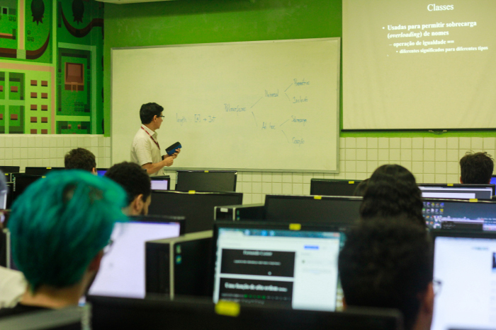

Graduação

Disciplinas cursadas no momento:
Introdução à Computação
Introdução à Programação
Matemática Discreta
Álgebra Vetorial Linear para Computação
Cálculo 1
Início
Sobre mim
Hobbies
Ambições e futuros projetos